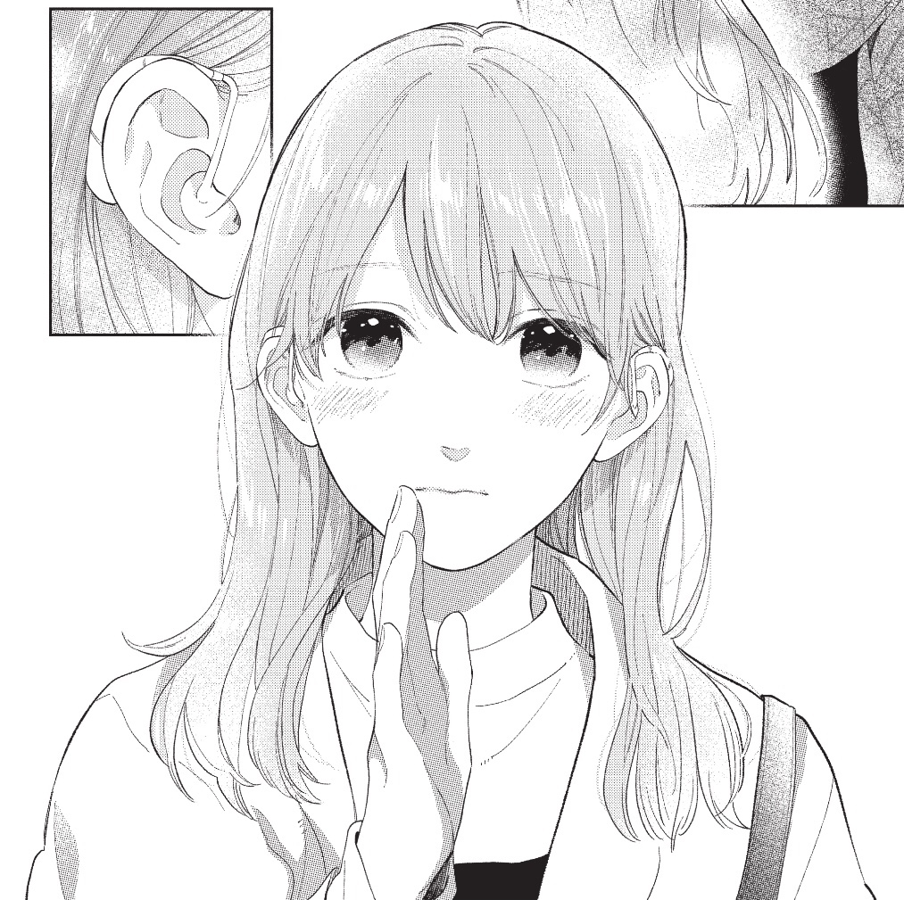
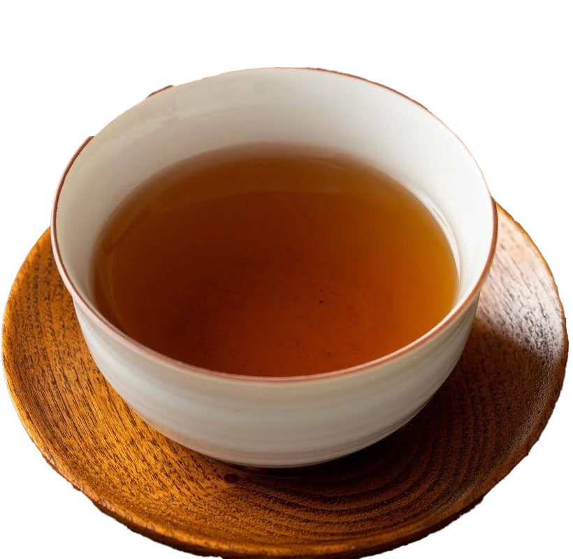
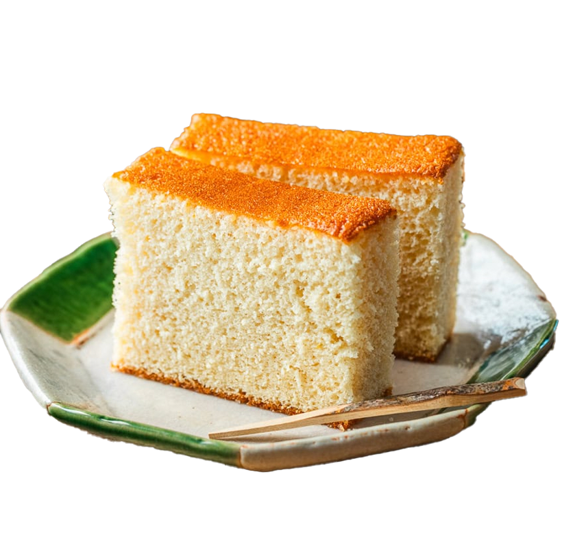

My mom suggested this series to me. In fact she's been
getting me a new volume every time it comes out haha. It's all in japanese, luckily containing
furigana so it's actually readable for me. I can recognize some kanji but definitely not all, I've
been working on it at least. I think the artstyle is really cute, and the characters are adorable.
The storyline is pretty cute, and I really love the fact it depects JSL or シュア (shua) in
its story.

This is yuki! The protagonist herself is deaf, so we see how she lives her life and how others around
her treat her.
She's a very sweet and fashionable girl. (Too bad we're into different types of fashion LOL) And
her love interest is this guy named Itsoumi (逸臣), you'll have to read more if you want to get more.
Overall it's a slice of life romance with not that much conflict, for me I like to read this when I want a slow day, or just to unwind and not think too hard.


If I got to eat something with this series it would probably be houjicha and castella cake. There's a peach one in tokyo market that is really good, I reccomend trying it at least once.
***